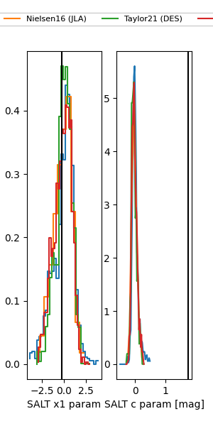

TNS: 2025wsn
YSE: 2025wsn
2025wsn (yse,tns)
PS25hho (panstarrs)
equatorial (ra, dec) = (36.3494,-7.83886)
galactic (l, b) = (176.3642,-60.55154)

last ps1::i=20.79, ps1::r=21.11
3 ps1::i, 2 ps1::r detections